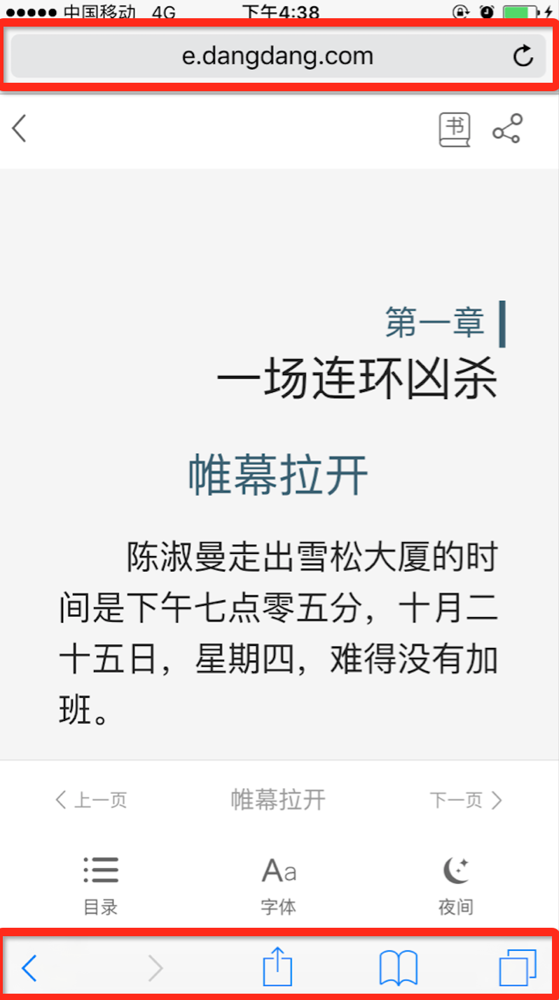

网页全屏展示
一般手机浏览器上面和下面都会有一些操作栏（如下图）。手机屏幕本来能承载的东西就有限，又占去了一些区域。那么有什么办法去掉呢

1.HTML5页面强制竖屏和全屏（部分浏览器兼容）
< !-- uc强制竖屏 -- > < meta name="screen-orientation" content="portrait" > < !-- QQ强制竖屏 -- > < meta name="x5-orientation" content="portrait"> < !-- UC强制全屏 -- > < meta name="full-screen" content="yes" > < !-- QQ强制全屏 -- > < meta name="x5-fullscreen" content="true" > < !-- UC应用模式 -- > < meta name="browsermode" content="application" > < !-- QQ应用模式 -- > < meta name="x5-page-mode" content="app" >
2.HTML5页面强制横屏全屏（部分浏览器兼容）
//强制全屏
// 先检测最标准的方法
if(element.requestFullScreen) {
element.requestFullScreen();
} else if(element.mozRequestFullScreen) {
// 其次，检测Mozilla的方法
element.mozRequestFullScreen();
} else if(element.webkitRequestFullScreen) {
// if 检测 webkit的API
element.webkitRequestFullScreen();
}
//退出全屏
if(document.cancelFullScreen) {
document.cancelFullScreen();
} else if(document.mozCancelFullScreen) {
document.mozCancelFullScreen();
} else if(document.webkitCancelFullScreen) {
document.webkitCancelFullScreen();
}